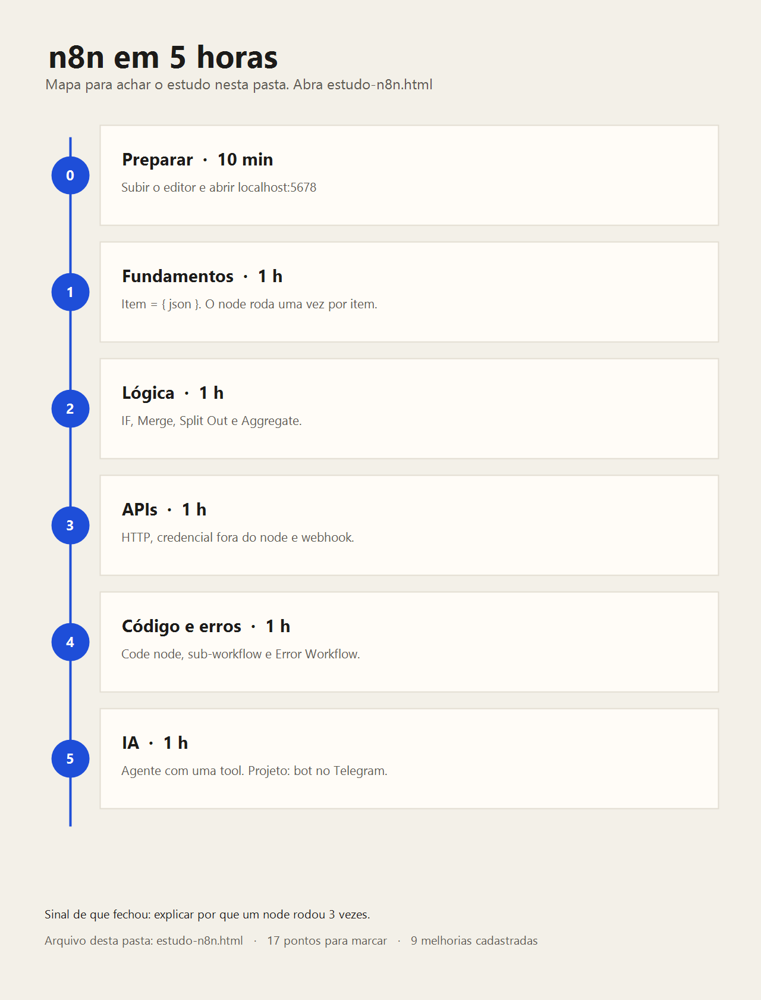

n8n do zero ao avançado em 5 horas
Esta pasta é o material. A imagem abaixo é o mapa. O texto em seguida é o estudo. O que você marcar fica salvo neste navegador.

Preparar · 10 min
O editor local é o caderno. Tudo que vier depois se constrói com o workflow aberto.
Subir o editor nesta máquina
O Node.js do sistema é 20.11.0. O n8n 2.41 pede 20.19 ou mais novo, e o Docker não está instalado. O que funcionou foi um Node 24 portátil, sem permissão de administrador:
Abra http://localhost:5678. Na primeira vez, crie a conta de dono do editor. Os dados ficam em C:\Users\DELL\.n8n.
Construa cada prática no editor. Use Pin data para congelar a saída de um node e não repetir a chamada externa a cada teste.
Hora 1 · Fundamentos
Todo node recebe e devolve uma lista de items. Cada item tem a forma { json: { ... } }. O node roda uma vez por item.
Peças
Workflow é o fluxo inteiro. Node é um passo. Trigger é o que inicia: Manual, Schedule ou Webhook.
Items
Se entram 3 pessoas, o node seguinte executa 3 vezes. A aba JSON mostra a lista real. Table é só uma visão da mesma lista.
Expressions
Campo do item atual: {{ $json.nome }}. Campo de outro node: {{ $('Nome do Node').item.json.campo }}. Data: {{ $now.toFormat('dd/MM/yyyy') }}.
Prática
- Manual Trigger.
- Edit Fields (Set) com 3 items: Ana, Bruno e Carla.
- Outro Edit Fields com a frase Olá {{ $json.nome }}.
- Confira 3 items na saída.
Saída: você explica por que o segundo node rodou 3 vezes.
Hora 2 · Lógica
Ramifique, junte e mude a forma da lista. O loop manual só entra quando há limite de taxa ou paginação.
IF e Switch ramificam. Merge junta ramos (posição, campo-chave ou append). Filter, Sort, Limit e Remove Duplicates enxugam a lista.
Split Out transforma um array em vários items. Aggregate faz o inverso. Loop Over Items processa em lotes. O n8n já percorre os items sozinho.
Prática
- HTTP Request em https://jsonplaceholder.typicode.com/users
- IF: address.city começa com S.
- Nos dois ramos, Edit Fields com um rótulo. Merge no modo append.
Saída: você aponta qual ramo recebeu quais cidades.
Hora 3 · APIs e webhooks
A maior parte do trabalho real é HTTP com credencial guardada fora do node, mais um webhook que responde.
No HTTP Request: método, headers, query, body JSON, Header Auth, Bearer ou OAuth2. Import cURL monta o node a partir de um comando. A chave fica em Credentials.
A URL de teste do Webhook só responde com o editor escutando. A URL de produção só responde com o workflow ativo. Respond to Webhook devolve o JSON que você definir.
Prática
- Webhook no path contato, body com email e mensagem.
- IF: email contém @.
- Respond to Webhook com { "ok": true }.
Hora 4 · Código, arquitetura e erros
Código só onde o node visual não alcança. Erro tem caminho próprio, e lógica repetida vira sub-workflow.
O Code node devolve sempre uma lista: [{ json: { ... } }]. Leia todos os items com $input.all(). Outro node inteiro: $('Nome').all().
Execute Workflow chama outro fluxo, que começa com When Executed by Another Workflow.
No node: Retry On Fail, Continue On Fail, ou Continue (using error output). Um Error Workflow com Error Trigger avisa quando algo quebrar. Em Executions, use Debug in editor.
Prática
- Validação de e-mail da hora 3 vira sub-workflow.
- Code node deixa o email em minúsculas, sem espaço nas pontas.
- Force um erro e confira o Error Workflow.
Hora 5 · IA e produção
O agente chama tools. Produção troca SQLite, chave e URL pública. O projeto final é o exame.
AI Agent com Chat Model (OpenAI, Gemini ou Ollama), Memory e Tools. Uma tool pode ser HTTP Request, outro workflow ou Code. Basic LLM Chain com Structured Output Parser extrai JSON. RAG, em visão geral: embeddings e um vector store.
Em produção: Docker Compose com Postgres, N8N_ENCRYPTION_KEY fixa, HTTPS e WEBHOOK_URL pública. Queue mode (Redis e workers) quando uma instância só não dá conta.
Projeto final
- Bot no Telegram com AI Agent.
- Uma tool que consulta uma API (cotação, clima ou um sistema seu).
- Error Workflow avisando quando falhar.
Sinal de que o mapa fechou: você explica por que um node rodou 3 vezes e monta esse bot sem tutorial passo a passo.
Referências
docs.n8n.io · cursos em docs.n8n.io/courses · templates em n8n.io/workflows · dúvidas em community.n8n.io
O que falta para melhorar este estudo
Nove itens ainda não estão no material. Estão cadastrados aqui para não se perderem. Prioridade alta deixa o roteiro executável nesta máquina.
| Melhoria | Por que entra | Prioridade |
|---|---|---|
| Workflows JSON de cada hora nesta pasta | Sem arquivo para importar, refazer o fluxo depende da memória. | Alta |
| Gabarito da saída de cada node | Quantos items saem e quais campos existem. | Alta |
| Anotar o comando que subiu o n8n aqui | Falta registrar se foi npx ou Docker, e a versão. | Alta |
| Projeto final em passos com Pin data | A hora 5 pede o bot sem um roteiro executável. | Média |
| Provedor de IA escolhido e credencial | OpenAI, Gemini ou Ollama. Sem isso a hora 5 para no conceito. | Média |
| Glossário com mais um exemplo por expression | $json, $('Node').item e $input.all() se misturam na hora 4. | Média |
| Página curta de erros comuns | Webhook de teste com o editor fechado, workflow inativo, erro escondido. | Média |
| Nome da primeira automação real | O avanço depois das 5 horas começa numa tarefa sua. | Baixa |
| Exportar os workflows prontos para esta pasta | Reinstalar o n8n apaga o estudo se o JSON não estiver salvo. | Baixa |